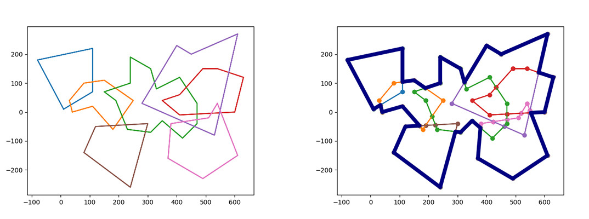
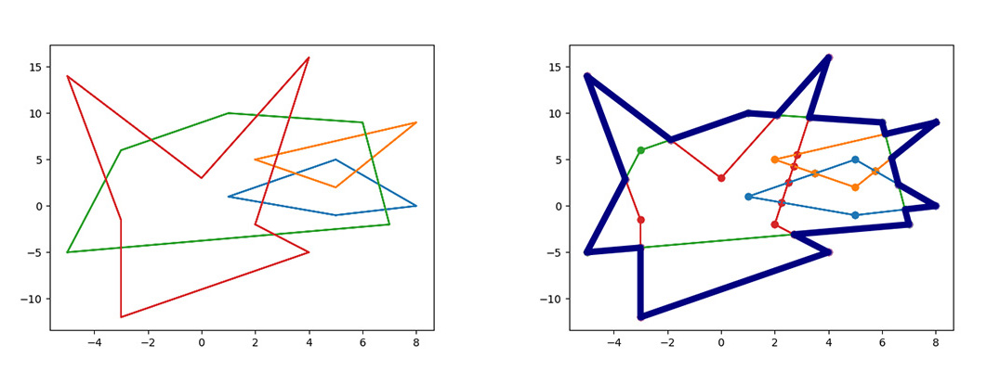
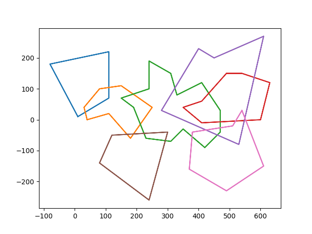
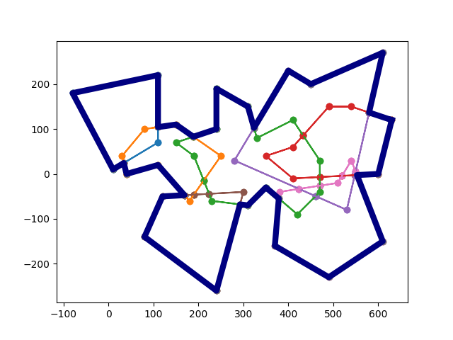

N polygons are placed randomly, with the number of sides of each polygon (m>=3).
The ordered set of coordinates for each polygon vertex is known.
The union of n polygons contour lines, and elimination of internal island areas.
Python demonstration algorithm and graphical explanation.
This regular-routing algorithm is purely original code and does not reference other sets of geometric algorithms.




# --------------------------------------------------------------
#
# Update: 2023.02.17
# Adaptation of multiple intersections
#
# --------------------------------------------------------------
import operator
import numpy as np
from copy import deepcopy
import matplotlib.pyplot as plt
from PloyData_0 import *
def XYMaxPoint(PList):
Xmax = max(i[0] for i in PList)
Xlist = []
for poi in PList:
if poi[0] == Xmax:
Xlist.append(poi)
Ymax = max(i[1] for i in Xlist)
for i in PList:
if i[0] == Xmax and i[1] == Ymax:
return i
def RegulaPloy(ploy):
Xmax = max([i[0] for i in ploy])
for id, item in enumerate(ploy):
if item[0] == Xmax:
Num = id
break
tempPloy = ploy.copy()
tempPloy.append(ploy[0])
tempPloy.insert(0, ploy[len(ploy) - 1])
[x1, y1] = tempPloy[Num]
[x2, y2] = tempPloy[Num + 1]
[x3, y3] = tempPloy[Num + 2]
Wise = (x3 - x2) * (y1 - y2) - (x1 - x2) * (y3 - y2)
if Wise < 0:
ploy.reverse()
return ploy
def SidePloy(ploy):
SideP = []
for id, item in enumerate(ploy):
if id < len(ploy) - 1:
SideP.append([item, ploy[id + 1]])
else:
SideP.append([item, ploy[0]])
return SideP
# Two line segments intersections
def IsCross(line1, line2):
[[Ax1, Ay1], [Ax2, Ay2]] = line1
[[Bx1, By1], [Bx2, By2]] = line2
m1 = (Bx1 - Ax1) * (Ay2 - Ay1) - (Ax2 - Ax1) * (By1 - Ay1) # line1 2-sides
m2 = (Bx2 - Ax1) * (Ay2 - Ay1) - (Ax2 - Ax1) * (By2 - Ay1)
k1 = (Ax1 - Bx1) * (By2 - By1) - (Bx2 - Bx1) * (Ay1 - By1) # line2 2-sides
k2 = (Ax2 - Bx1) * (By2 - By1) - (Bx2 - Bx1) * (Ay2 - By1)
return m1 * m2 <= 0 and k1 * k2 <= 0
# Find the intersection of two line segments
def CrossPoi(line1, line2):
[[Ax1, Ay1], [Ax2, Ay2]] = line1
[[Bx1, By1], [Bx2, By2]] = line2
Left = (Bx2 - Bx1) * (Ay1 - Ay2) - (Ax2 - Ax1) * (By1 - By2)
Right = (Ay1 - By1) * (Ax2 - Ax1) * (Bx2 - Bx1) + Bx1 * \
(By2 - By1) * (Ax2 - Ax1) - Ax1 * (Ay2 - Ay1) * (Bx2 - Bx1)
x = Right / Left
Left = (Ax1 - Ax2) * (By2 - By1) - (Ay2 - Ay1) * (Bx1 - Bx2)
Right = Ay2 * (Ax1 - Ax2) * (By2 - By1) + (Bx2 - Ax2) * \
(By2 - By1) * (Ay1 - Ay2) - By2 * (Bx1 - Bx2) * (Ay2 - Ay1)
y = Right / Left
return [x, y]
def Dis(p1, p2):
return (p2[0] - p1[0])**2 + (p2[1] - p1[1])**2
# The insertion point is homed to each side
# Determine the order of intersections within each edge
def IndexCrossPoi(ployName, pnum, AllCrossP):
# Intra-edge intersection collection
Plist = []
# All intersections Routing information (including binary and n-forks)）
for i in AllCrossP:
if (i[2] == ployName and i[3] == pnum) or (i[4] == ployName and i[5] == pnum):
Plist.append([i[0], i[1], i[2], i[4]])
# Add distance information
for i in Plist:
i.append(Dis(Data[ployName][pnum], [i[0], i[1]]))
# Sort
Plist.sort(key=operator.itemgetter(-1))
for i in Plist:
i.pop()
return Plist
def WiseAngle(v1, v2):
# v1 rotates to v2, counterclockwise is positive, clockwise is negative
# Product of 2 vector modulos
TheNorm = np.linalg.norm(v1) * np.linalg.norm(v2)
# Multiplication
rho = np.rad2deg(np.arcsin(np.cross(v1, v2) / TheNorm))
# Dot
theta = np.rad2deg(np.arccos(np.dot(v1, v2) / TheNorm))
if rho < 0:
theta = -theta
if theta < 0:
theta = 360 + theta
return theta
def GenRoute(Point, VecA):
# Point Format [1, 3, "A","B","F"]
P0 = [Point[0], Point[1]]
AngList = []
for i in range(2, len(Point)):
ployname = Point[i]
T = 0
for poi in Data[ployname]:
if T == 1:
PB = poi
T = 0
# break
if poi[0] == Point[0] and poi[1] == Point[1]:
T = 1
VecB = [PB[0] - P0[0], PB[1] - P0[1]]
AngList.append([ployname, WiseAngle(VecA, VecB)])
AngList.sort(key=operator.itemgetter(-1))
nextName = AngList[0][0]
return nextName
def RouteSec(TPoi, StartPoi):
T = 0
# Format [X,Y,PloyName]
ployName = TPoi[2]
for poi in Data[ployName]:
if T == 1:
if poi[0] == StartPoi[0] and poi[1] == StartPoi[1]:
print("Contour Done！")
return "OK"
if len(poi) == 2:
ContourLine.append([poi[0], poi[1]])
if len(poi) == 4:
T = 0
if poi[2] == ployName:
nextName = poi[3]
elif poi[3] == ployName:
nextName = poi[2]
else:
print("Error: Intersection routing information error.")
return [poi[0], poi[1], nextName]
# n fork turn
if len(poi) >= 4 and poi[-1] == "__DoubleCross__":
T = 0
poi.pop(-1)
VecA = [prePoint[0] - poi[0], prePoint[1] - poi[1]]
nextName = GenRoute(poi, VecA)
return [poi[0], poi[1], nextName]
prePoint = poi
if poi[0] == TPoi[0] and poi[1] == TPoi[1]:
# Note Floating-point precision issues
ContourLine.append([poi[0], poi[1]])
T = 1
prePoint = poi
# Generate intersections
def GenCrossPoi():
PloyPair = []
KList = [i for i in Data.keys()]
for i in range(len(KList)):
for j in range(i + 1, len(KList)):
PloyPair.append([KList[i], KList[j]])
AllCrossP = []
for pair in PloyPair:
for id, Aline in enumerate(SidePloy(Data[pair[0]])):
for jd, Bline in enumerate(SidePloy(Data[pair[1]])):
if IsCross(Aline, Bline):
x_y = CrossPoi(Aline, Bline)
info = [pair[0], id, pair[1], jd]
x_y.extend(info)
AllCrossP.append(x_y)
DCrossP = deepcopy(AllCrossP)
NCrossPDict = {}
for id, item in enumerate(DCrossP):
for jd, jtem in enumerate(DCrossP):
if jd > id:
if item[0] == jtem[0] and item[1] == jtem[1]:
# 信息分段化
key = (item[0], item[1])
item0 = []
jtem0 = []
for i in range(2, len(item) - 1, 2):
temp = item[i]
item0.append(temp)
for j in range(2, len(jtem) - 1, 2):
temp = jtem[i]
jtem0.append(temp)
# 写入分段val
if key not in NCrossPDict.keys():
NCrossPDict[key] = []
for i in item0:
NCrossPDict[key].append(i)
for j in jtem0:
if j not in NCrossPDict[key]:
NCrossPDict[key].append(j)
for i in item0:
if i not in NCrossPDict[key]:
NCrossPDict[key].append(i)
for j in jtem0:
if j not in NCrossPDict[key]:
NCrossPDict[key].append(j)
RepCrossDict = {}
for key, val in NCrossPDict.items():
for i in range(len(val)):
key1 = tuple(list(key))
RepCrossDict[key1] = list(key) + val + ['__DoubleCross__']
return DCrossP, RepCrossDict
def plot2D():
for ploy in Data.values():
x = [i[0] for i in ploy]
y = [i[1] for i in ploy]
x.append(x[0])
y.append(y[0])
plt.scatter(x, y)
plt.plot(x, y)
x = [i[0] for i in ContourLine]
y = [i[1] for i in ContourLine]
x.append(x[0])
y.append(y[0])
plt.scatter(x, y)
plt.plot(x, y, lw=6, color='navy')
plt.show()
if __name__ == "__main__":
for val in Data.values():
val = RegulaPloy(val)
PlotData = deepcopy(Data)
AllployPoi = []
for name, val in PlotData.items():
for i in val:
i.append(name)
AllployPoi.append(i)
StartPoi = XYMaxPoint(AllployPoi)
DCrossP, RepCrossDict = GenCrossPoi()
for name, ploy in Data.items():
for i in range(len(ploy) - 1, -1, -1):
insPoiList = IndexCrossPoi(name, i, DCrossP)
if insPoiList != []:
insPoiList.reverse()
for j in insPoiList:
ploy.insert(i + 1, j)
for key, val in RepCrossDict.items():
for name, ploy in Data.items():
T = 0
for i in range(len(ploy) - 1, -1, -1):
if list(key) == ploy[i][:2] and T == 0:
Data[name][i] = val
T = 1
continue
if list(key) == ploy[i][:2] and T == 1:
Data[name].remove(ploy[i])
T = 1
for key, val in Data.items():
Data[key] = Data[key] * 2
Poi_A = StartPoi
Poi_B = []
ContourLine = []
while Poi_B != "OK":
Poi_B = RouteSec(Poi_A, StartPoi)
Poi_A = Poi_B
plot2D()
# -------------------------------------------------------------- # # Update: 2023.02.14 # # -------------------------------------------------------------- import operator from copy import deepcopy import matplotlib.pyplot as plt from PloyData_1 import * def XYMaxPoint(PList): Xmax = max(i[0] for i in PList) Xlist = [] for poi in PList: if poi[0] == Xmax: Xlist.append(poi) Ymax = max(i[1] for i in Xlist) for i in PList: if i[0] == Xmax and i[1] == Ymax: return i def RegulaPloy(ploy): # X-extreme point. The need for regular judgment Xmax = max([i[0] for i in ploy]) for id, item in enumerate(ploy): if item[0] == Xmax: Num = id break # Extend the data on both sides tempPloy = ploy.copy() tempPloy.append(ploy[0]) tempPloy.insert(0, ploy[len(ploy) - 1]) # Extend the data on both sides [x1, y1] = tempPloy[Num] [x2, y2] = tempPloy[Num + 1] [x3, y3] = tempPloy[Num + 2] Wise = (x3 - x2) * (y1 - y2) - (x1 - x2) * (y3 - y2) if Wise < 0: ploy.reverse() return ploy def SidePloy(ploy): # Generate regular edges SideP = [] for id, item in enumerate(ploy): if id < len(ploy) - 1: SideP.append([item, ploy[id + 1]]) else: SideP.append([item, ploy[0]]) return SideP def IsCross(line1, line2): [[Ax1, Ay1], [Ax2, Ay2]] = line1 [[Bx1, By1], [Bx2, By2]] = line2 m1 = (Bx1 - Ax1) * (Ay2 - Ay1) - (Ax2 - Ax1) * (By1 - Ay1) # line1 2-sides m2 = (Bx2 - Ax1) * (Ay2 - Ay1) - (Ax2 - Ax1) * (By2 - Ay1) k1 = (Ax1 - Bx1) * (By2 - By1) - (Bx2 - Bx1) * (Ay1 - By1) # line2 2-sides k2 = (Ax2 - Bx1) * (By2 - By1) - (Bx2 - Bx1) * (Ay2 - By1) return m1 * m2 <= 0 and k1 * k2 <= 0 def CrossPoi(line1, line2): [[Ax1, Ay1], [Ax2, Ay2]] = line1 [[Bx1, By1], [Bx2, By2]] = line2 Left = (Bx2 - Bx1) * (Ay1 - Ay2) - (Ax2 - Ax1) * (By1 - By2) Right = (Ay1 - By1) * (Ax2 - Ax1) * (Bx2 - Bx1) + Bx1 * \ (By2 - By1) * (Ax2 - Ax1) - Ax1 * (Ay2 - Ay1) * (Bx2 - Bx1) x = Right / Left Left = (Ax1 - Ax2) * (By2 - By1) - (Ay2 - Ay1) * (Bx1 - Bx2) Right = Ay2 * (Ax1 - Ax2) * (By2 - By1) + (Bx2 - Ax2) * \ (By2 - By1) * (Ay1 - Ay2) - By2 * (Bx1 - Bx2) * (Ay2 - Ay1) y = Right / Left return [x, y] def Dis(p1, p2): return (p2[0] - p1[0])**2 + (p2[1] - p1[1])**2 def IndexCrossPoi(ployName, ploy, pnum, AllCrossP): Plist = [] for i in AllCrossP: if (i[2] == ployName and i[3] == pnum) or (i[4] == ployName and i[5] == pnum): Plist.append(i) for i in Plist: if len(i) == 6: i.append(Dis(ploy[pnum], [i[0], i[1]])) if len(i) == 7: i[6] = Dis(ploy[pnum], [i[0], i[1]]) Plist.sort(key=operator.itemgetter(6)) return Plist def RouteSec(XYRpoi, StartPoi): T = 0 ployName = XYRpoi[2] for poi in Data[ployName]: if T == 1: if poi[0] == StartPoi[0] and poi[1] == StartPoi[1]: print("Contour lines are Generated！") return "OK" if len(poi) == 2: ContourLine.append([poi[0], poi[1]]) if len(poi) > 2: T = 0 if poi[2] == ployName: nextName = poi[4] elif poi[4] == ployName: nextName = poi[2] else: print("Error: The intersection routing information is incorrect.") return [poi[0], poi[1], nextName] if poi[0] == XYRpoi[0] and poi[1] == XYRpoi[1]: ContourLine.append([poi[0], poi[1]]) T = 1 def plot2D(): for ploy in Data.values(): x = [i[0] for i in ploy] y = [i[1] for i in ploy] x.append(x[0]) y.append(y[0]) plt.scatter(x, y) plt.plot(x, y) x = [i[0] for i in ContourLine] y = [i[1] for i in ContourLine] x.append(x[0]) y.append(y[0]) plt.scatter(x, y) plt.plot(x, y, lw=6, color='navy') plt.show() if __name__ == "__main__": # Ploy direction regularization for val in Data.values(): val = RegulaPloy(val) PlotData = deepcopy(Data) # n polygons, bubbling method Pair two. # List numbered index bubbling pairing. PloyPair = [] KList = [i for i in Data.keys()] for i in range(len(KList)): for j in range(i + 1, len(KList)): PloyPair.append([KList[i], KList[j]]) # Calculate all intersection points. AllCrossP = [] for pair in PloyPair: for id, Aline in enumerate(SidePloy(Data[pair[0]])): for jd, Bline in enumerate(SidePloy(Data[pair[1]])): if IsCross(Aline, Bline): xy = CrossPoi(Aline, Bline) info = [pair[0], id, pair[1], jd] xy.extend(info) AllCrossP.append(xy) # Each side intersects point retrieval / insertion # Polygon vertex ploy update # (with intersection inserts) for name, ploy in Data.items(): for i in range(len(ploy) - 1, -1, -1): insPoiList = IndexCrossPoi(name, ploy, i, AllCrossP) if insPoiList != []: insPoiList.reverse() for j in insPoiList: ploy.insert(i + 1, j) for key, val in Data.items(): Data[key] = Data[key] * 2 # Generate StartPoint AllployPoi = [] for name, val in PlotData.items(): for i in val: i.append(name) AllployPoi.append(i) StartPoi = XYMaxPoint(AllployPoi) Poi_A = StartPoi Poi_B = [] # Generate Contour ContourLine = [] while Poi_B != "OK": Poi_B = RouteSec(Poi_A, StartPoi) Poi_A = Poi_B # Plot plot2D()